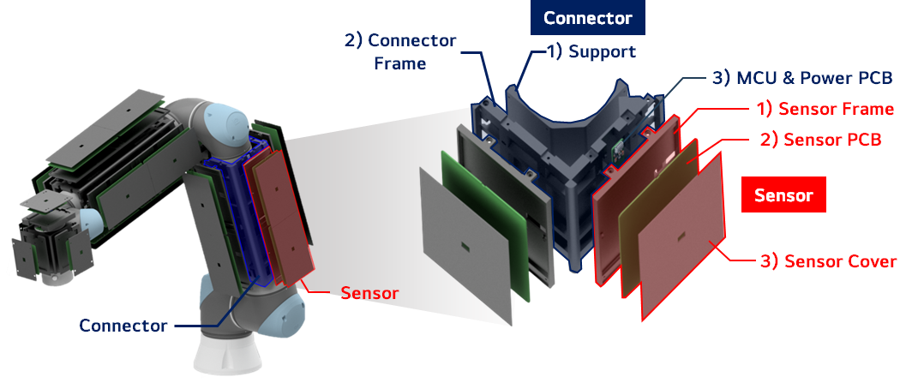

Proximity Sensing · Reactive Motion Control · Learning-Based Manipulation
Young Bin Song
M.S. Candidate in Mechanical Engineering
Researcher at Robotory Lab, Sungkyunkwan University, developing proximity sensing systems,
reactive motion control for safe HRI, and learning-based robot manipulation.
01
Research Projects
2024—2026
Sensor Hardware 01
Signal Processing 02
Reactive Motion Control 03
Learning-Based Manipulation 04

Altium STM32 Inventor
↗
01 · Sensor Hardware · Distance Fusion
정전용량 센서와 ToF 센서를 하나의 모듈에 통합하고, 로봇별 지지부만
교체해 Indy7·UR10·RB10에 적용했습니다. 온도 영향 보상과 Adaptive EMA,
불확실성 기반 융합으로 근접 거리를 추정했습니다.
구현
센서 PCB · 모듈형 장착 구조 · 신호 처리 및 거리 융합
결과
Indy7·UR10·RB10 적용 · 20–300 mm 거리 평가
시스템 구성과 결과 보기 →
Python TensorFlow
↗
02 · Signal Processing · MLP Compensation
관절 위치와 속도로 로봇 동작에 따른 정전용량 센서의 자체 감지 응답을
예측하고, 채널별 측정값에서 제거해 외부 물체에 의한 잔차 신호를
분리했습니다.
구현
관절 상태 데이터 수집 · MLP 기반 채널별 예측 · 잔차 보정
결과
RMSE 96.12% 감소 · 분산 99.85% 감소 · 8채널 보상
보상 모델과 결과 보기 →
C++ ROS 2 RViz
↗
03 · Reactive Motion Control · RMPflow
근접센서의 거리값을 RMPflow 제어기에 연결해 RB10이 주변 장애물에
반응하도록 구현했습니다. 기본 제어기에서 나타난 local minimum은
TG-RMP 접선 정책으로 완화했습니다.
구현
근접센서 기반 Reactive Motion Controller · TG-RMP 접선 정책 추가
결과
RB10 근접 장애물 회피 · local minimum 완화
제어 구조와 적용 결과 보기 →
Python PyTorch ROS 2
↗
04 · Learning-Based Manipulation · Safe Control
Diffusion Policy가 작업 행동을 생성하고, 근접센서 기반 RMPflow가
사람의 접근에 반응합니다. 회피로 학습 분포를 벗어난 뒤에는 LPB
guidance를 통해 작업 복귀를 지원합니다.
구현
RB10 통합 · RMPflow 실행 계층 · LPB/OOD 추론
검증
사람 접근 회피 · 동일 조건의 Base/Guided 비교
프로젝트와 영상 보기 →
02
Undergraduate Projects
2023—2024
2023.03—09 Team Lead · Hardware
야생동물 인식과 물 분사 퇴치 기능을 결합한 농가 보호 시스템
2023.06—11 Drone HW · AI SW
임무 수행용 드론의 하드웨어 제작과 YOLOv8 실시간 숫자 인식
2024.03—09 Team Lead · AI SW
손 제스처로 물·비누·건조 단계를 제어하는 비접촉 시스템
03
Experience & Education
Research & Project Experience
01
2025.03—Present
Graduate Researcher
Robotory Lab · Sungkyunkwan University
로봇 장착형 근접센서 하드웨어부터 신호처리, reactive motion control,
learning-based manipulation까지 실제 로봇 시스템으로 구현하고 검증했습니다.
2025.03—2026.12
Government-Funded R&D Project · Project Contributor
산업통상자원부 · 실시간 로봇 충돌 감지·회피 지능 통합 SoC 플랫폼
근접센서 모듈과 임베디드 하드웨어, 충돌 대응 알고리즘을 개발하고
로봇 시스템 수준의 적용과 검증을 수행했습니다.
Education
02
2025.03—2027.02
M.S. in Mechanical Engineering
Sungkyunkwan University
Robotory Lab · Advisor: Prof. Hyuk-Ryeol Choi · GPA 4.0/4.5
2019.03—2025.02
B.S. in Mechanical Engineering
Sejong University
GPA 3.93/4.5 · Major GPA 4.05/4.5
01
Hardware Design
Altium Designer · CATIA V5 · SOLIDWORKS · Autodesk Inventor
회로·PCB와 로봇 센서 모듈의 기구 구조 설계
02
Embedded Systems
STM32 · Embedded C/C++ · I²C · CAN
센서 데이터 수집과 MCU·전원 보드, 로봇 제어기 통신 구현
03
Robot Software
ROS 2 · RViz · PREEMPT_RT · C++
로봇 제어기 구현과 시각화, 실시간 제어 환경 구성
04
Data & Machine Learning
Python · MATLAB · PyTorch · TensorFlow
센서 데이터 처리와 학습 모델 구현, 로봇 정책 적용
Robot Platforms
Indy7 · UR10 · RB10